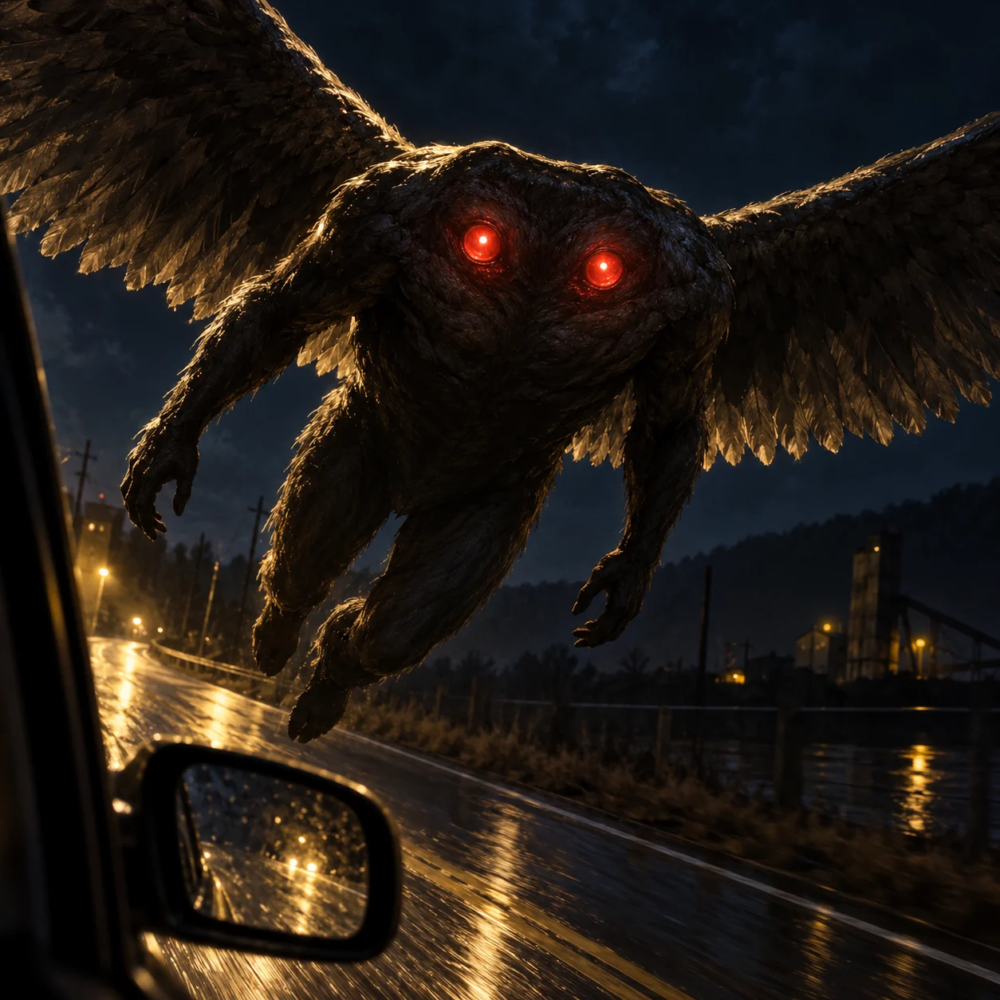

Mothman

Mothman in six-foot no-obvious-head/no-neck eyewitness form, shining red eyes in upper body and unmoving avian wings gliding beside a fleeing car.
Aura: Uncanny headless shoulder/body with shining red torso eyes c31, silent rigid-wing pursuit c32; avian features c01, no invented magic beams or bridge-disaster power.
Audit ciri dan sumber
- [object Object]
- [object Object]
- [object Object]
Native viewed: dark man-shaped creature has broad continuous shoulder contour WITHOUT separate head or obvious neck, two bright red eyes embedded in upper torso; two humanlike arms, two trailing legs and two avian wings held rigid across square as it glides alongside car window. No nose/beak/mouth, antennae, owl head, moth wings or superhero costume. Close chest eyes and low car window perspective create strong threat; no text/gore or invented technology effects. Root independently viewed BOTH native final variants: Root melihat kedua native: A kepala terpisah dengan wajah takterbaca selain dua mata merah, dua sayap PUTIH dan tubuh ramping; B jelas tanpa kepala/leher terpisah, dua mata merah pada bagian atas tubuh dan dua sayap rigid. Flight dekat mobil/sudut rendah menakutkan, tidak mencampur laporan eyewitness atau meniru desain film.
Review sumberONE original square premium painterly cinematic Mythics illustration. Imposing undeniable main subject, strong silhouette at 200 pixels, tactile painterly textures, cinematic low-key dark walnut/antique gold palette. HARD CONSTRAINTS: no text, lettering, pseudo-script, logo, watermark, signature, border or frame; no borrowed film/game/anime/comic design; no nudity or explicit gore; no generic glow aura, neon outline, magical energy ribbons or floating runes; source fidelity and respect for living traditions. ANATOMY: MOTHMAN only the distinct HEADLESS / NO-NECK eyewitness version: about SIX FEET tall MAN-SHAPED dark body WITHOUT AN OBVIOUS HEAD OR NECK, a broad rounded shoulder-line rises above TWO shining red eyes embedded in the UPPER TORSO. No separate head above shoulders, no face, beak, nose, mouth or antennae. Two humanlike arms and two legs, TWO AVIAN WINGS extended rigidly out from the upper body, no insect wing shapes. Source c31 eyes staring from body without head/neck, c32 flight with silent UNMOVING wings; feathers/dark wing coloring restrained editorial since those quotes do not specify color. [mothman-c01/c31/c32] MOMENT: Glide silently just outside the side window of a fleeing car, body canted forward, arms and legs trailing slightly, rigid wings make diagonal pressure across square; chest-eyes stare directly at the low viewer. Keep wings UNMOVING, no flapping motion blur. POWER: silent flight alongside car and shining red torso-eyes, no energy beams, no bridge-collapse or technology-disruption effect invented. [mothman-c31/c32] SCALE & CAMERA: close oblique low viewpoint from car window, upper body with CHEST EYES fills center 75 percent and rigid wings cross background diagonally, tiny car mirror at lower-left scale comparator, natural six-foot creature not literal giant. LIGHT & WEATHER: one car headlight beam grazes headless shoulder contour and eyes, deep blue-black night with gold street reflections, documented eye shine is small localized red. SURFACE: shadowy nonhuman dark texture with no exposed sexual anatomy, coarse feather edges, damp roadway. SETTING: nighttime Point Pleasant roadside, no bridge or modern city, munitions-site industrial shapes indistinct at edge as editorial context. MOOD: uncanny headless cryptid whose anatomy remains unmistakable, not ordinary owl, man, moth or armored superhero.